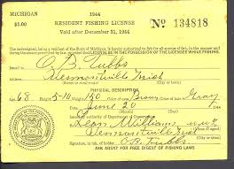

Well what else do i need, weel one super important thing you need when fishing is a fishing license.You need a fishing license becasue you need to support the fish and habitat conservation as if you don't have a fishing license you can get a ticket and mabey even aressed.
Well you might be asking yourself were should i go to get my fishing licnese?Well in my opinion i think that cabela's,bass pro shop,and scheels.I say this becasue they are the biggest and best fishing,hunting, and outdoor supplys you can go and buy stuff from.So go and get you fishing license today.
